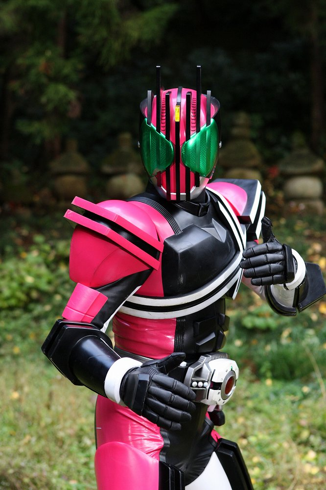
2009年から放送された「仮面ライダーディケイド」に登場する仮面ライダー
変身者は門矢士。ディケイドライバーとライダーカードを使い、変身する。
様々なライダーカードを使用し、異なるライダーの力を行使することが可能。
基本形態はディケイドフォーム
身長：192cm 体重：83kg パンチ力：4t キック力:8t ジャンプ力：ひと跳び25m 走力：100mを6秒程度
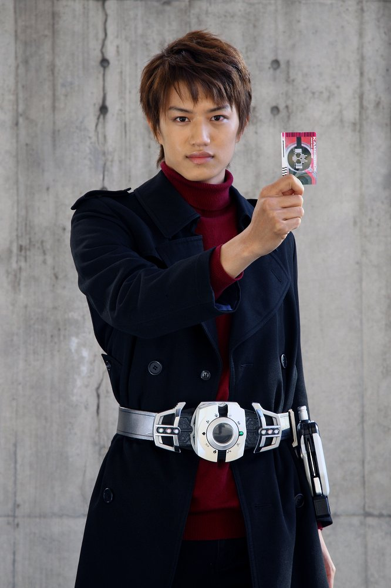
ディケイドライバーにライダーカードを装填し、ベルトを操作することで変身する。
クウガやアギトなどの過去のライダーのカードを使うことで
そのライダーに変身することができる。
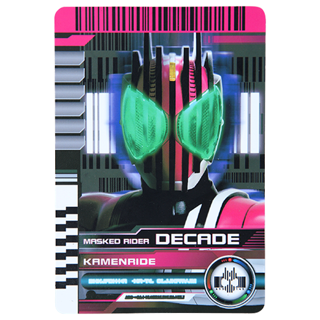
ライダーの力を持つカード。
ライダーに変身するカメンライドカード
戦闘をサポートするアタックライドカード
ライダーの形態を変化させるフォームライドカード
必殺技を放つファイナルアタックライドカード
ライダーを特殊な形態に変化させるファイナルフォームライドカード
これらが存在する。
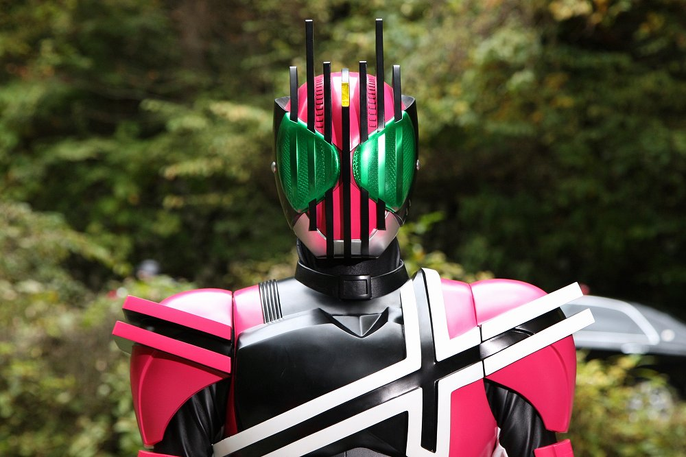
ディケイドフォーム
「カメンライドディケイド」ライダーカードで変身
世界の破壊者とも呼ばれる。
様々なライダーに変身し、その力を発揮する。
基本形態ながら、戦闘力は高く、アタックライドカードを使い、臨機応変に戦うことができる。
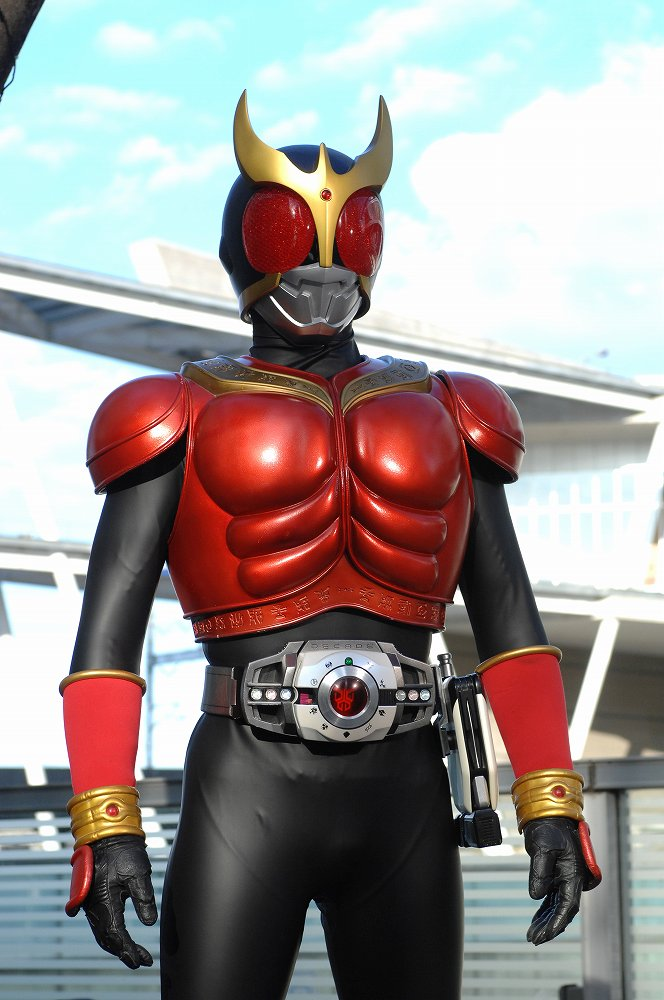
ディケイドクウガ
「カメンライドクウガ」ライダーカードで変身
クウガの力をオリジナルと同等に扱うことが可能。
高い格闘能力を持つ。
フォームライドカードを使うことで、クウガの様々な形態に変化することができる。
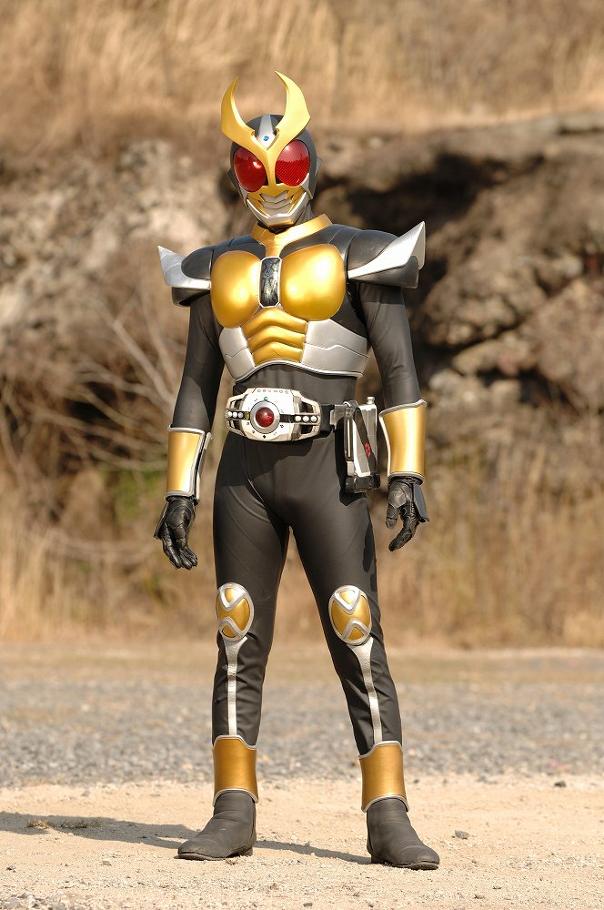
ディケイドアギト
「カメンライドアギト」ライダーカードで変身
アギトの力を使用可能。
強靭な肉体で、接近戦を得意とする。
フォームライドカードを使うことで、アギトの様々な形態に変化することができる。
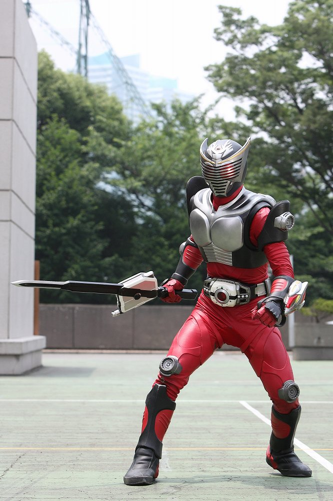
ディケイド龍騎
「カメンライド龍騎」ライダーカードで変身
龍騎の力を持ち、ミラーワールドを行き来することができ、奇襲を行うこともできる。
フォームライドカードを使うことで、龍騎の様々な形態に変化することができる。
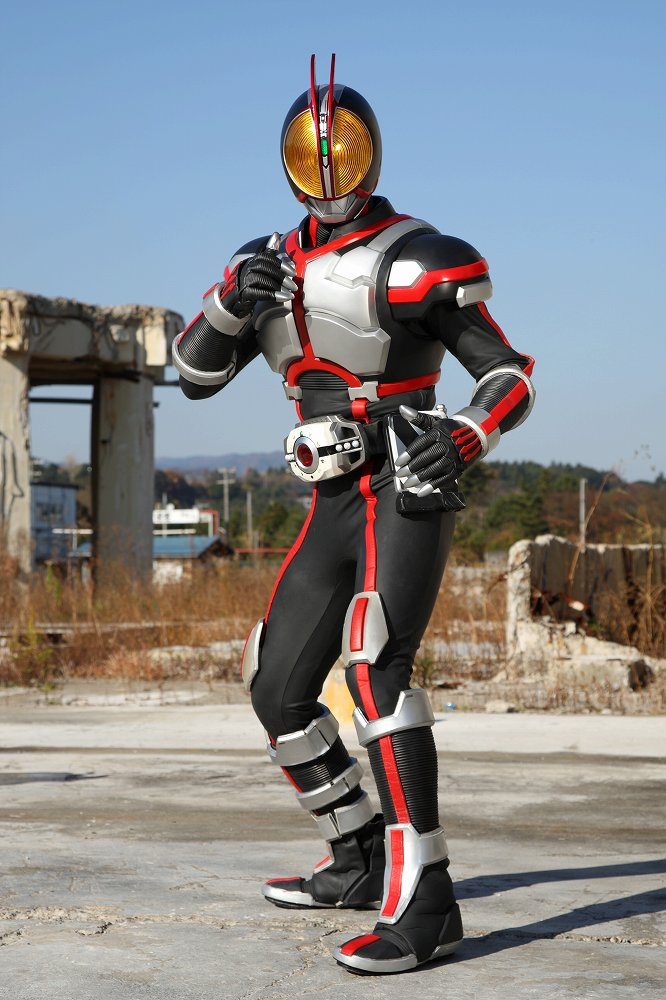
ディケイドファイズ
「カメンライドファイズ」ライダーカードで変身
ファイズの力を使い、フォームライドカードを使うことでアクセルフォームに変身し、
超高速の戦闘を可能にする。
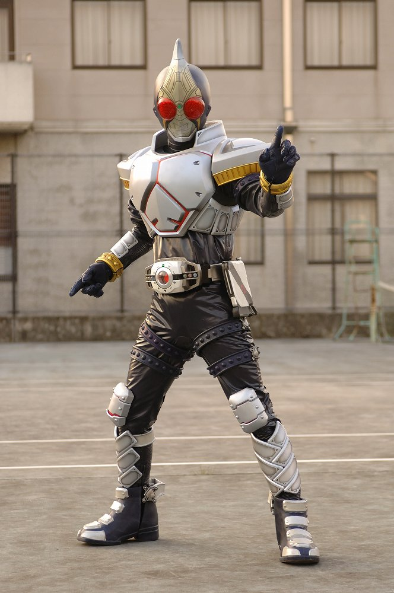
ディケイドブレイド
「カメンライドブレイド」ライダーカードで変身
ブレイドの力を使い、ラウズカードの力を使うことができる。
フォームライドカードを使うことで、ブレイドの様々な形態に変化することができる。
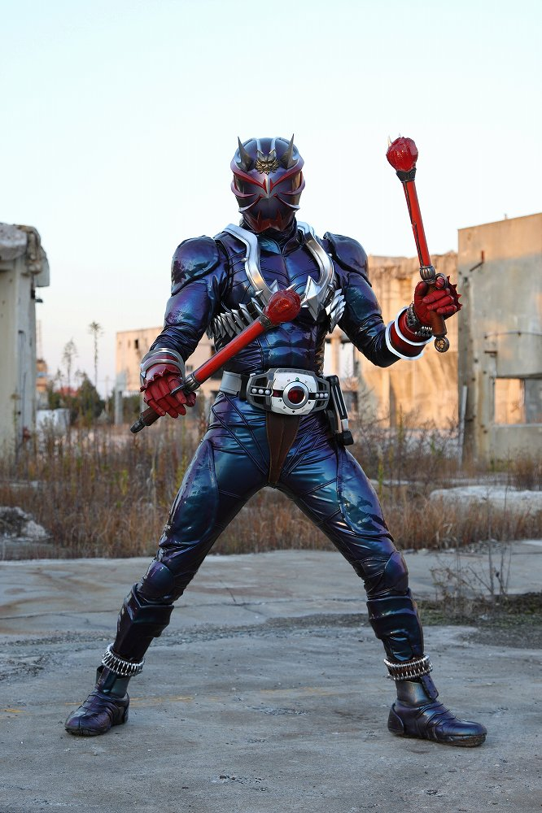
ディケイド響鬼
「カメンライド響鬼」ライダーカードで変身
響鬼の力を使用可能。
音撃棒を用いた術を扱う。
フォームライドカードを使うことで、響鬼の様々な形態に変化することができる。
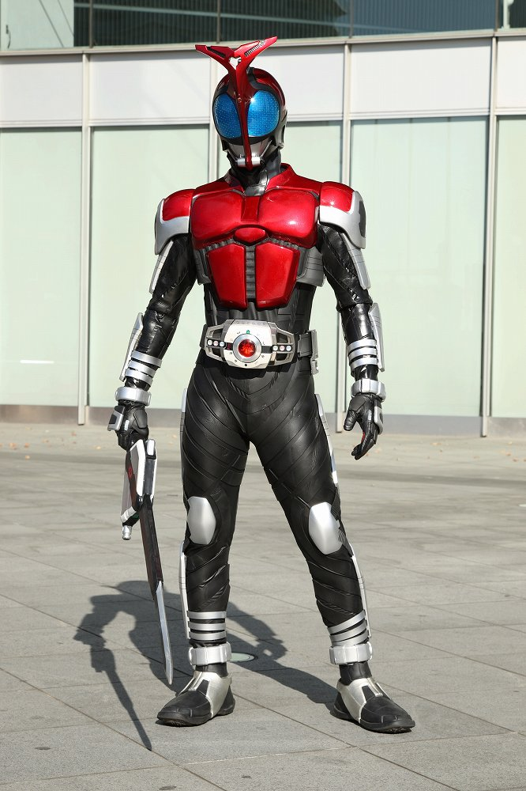
ディケイドカブト
「カメンライドカブト」ライダーカードで変身
カブトの力を使用し、クロックアップで超高速の戦闘を行う。
フォームライドカードを使うことで、カブトの様々な形態に変化することができる。
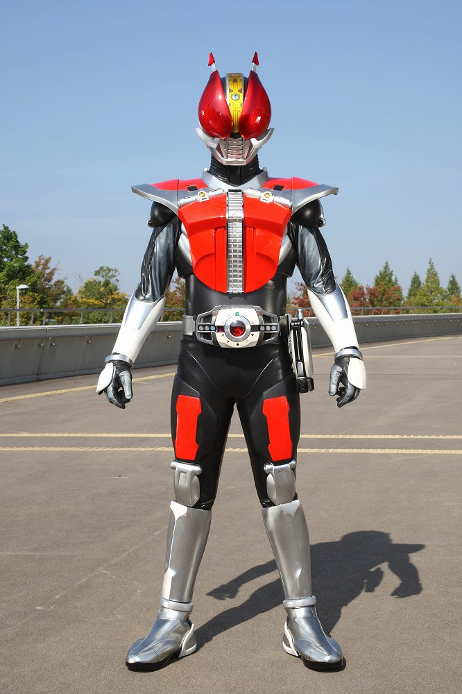
ディケイド電王
「カメンライド電王」ライダーカードで変身
電王の力を駆使する。
電王のアタックライドカードの一部にはそれぞれのフォームの決め台詞とポーズを再現するものも存在する。
フォームライドカードを使うことで、電王の様々な形態に変化することができる。
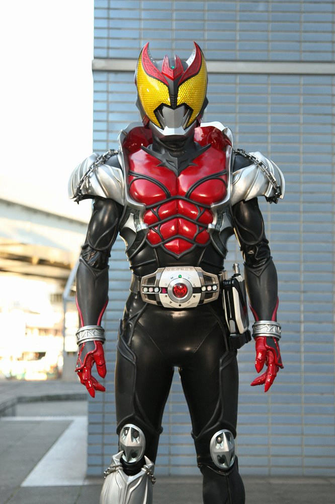
ディケイドキバ
「カメンライドキバ」ライダーカードで変身
キバの力を使い、格闘攻撃を主体とする戦いを行う。
フォームライドカードを使うことで、キバの様々な形態に変化することができる。
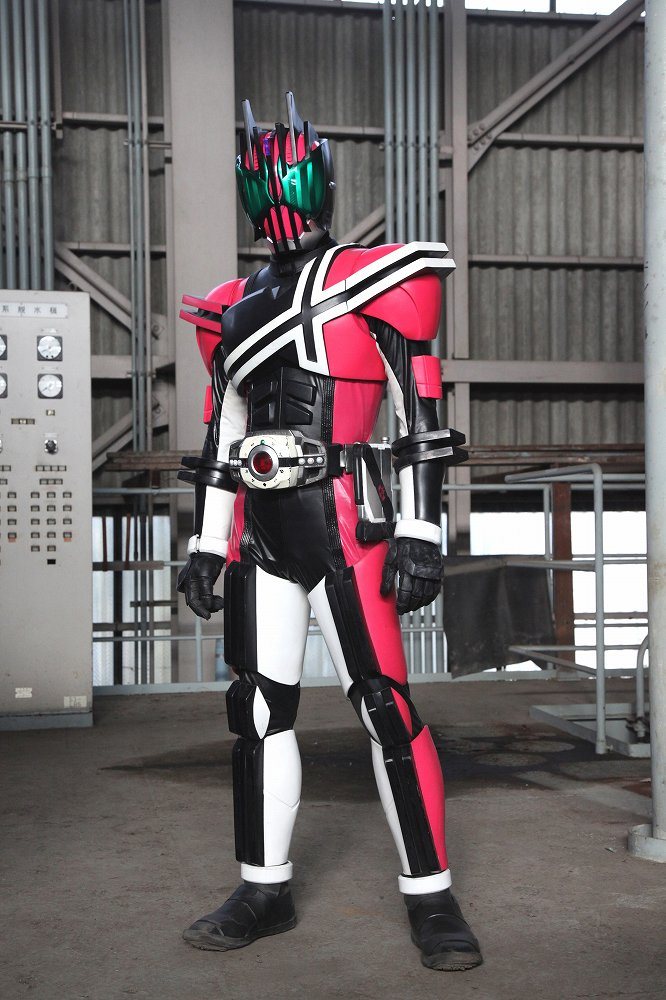
ディケイド激情態
「カメンライドディケイド」ライダーカードで変身
倒した仮面ライダーをカードにすることができる。
各ライダーの能力をそのライダーに変身せずとも使用可能。
冷酷かつ残忍な戦いを行い、立ちふさがるもの全てを破壊する様は
まさに世界の破壊者。
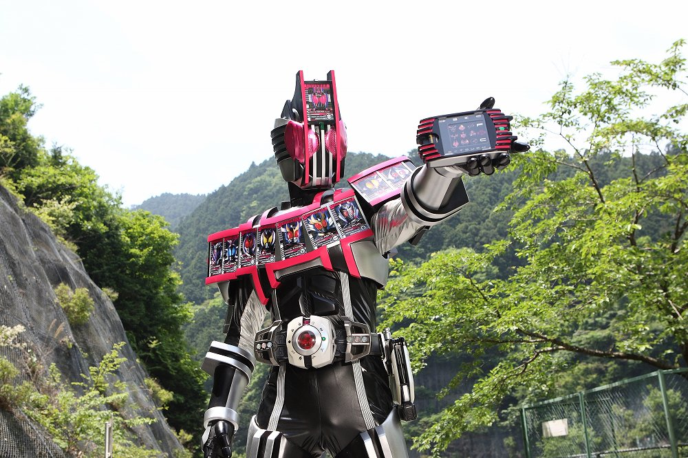
ディケイドコンプリートフォーム
変身アイテム「ケータッチ」を使用し、変身
歩く仮面ライダー図鑑
戦闘力の向上と、他ライダーの召喚ができる。
各ファイナルアタックライドカードを使う際に、そのライダーを召喚し、共に必殺技を放つ。
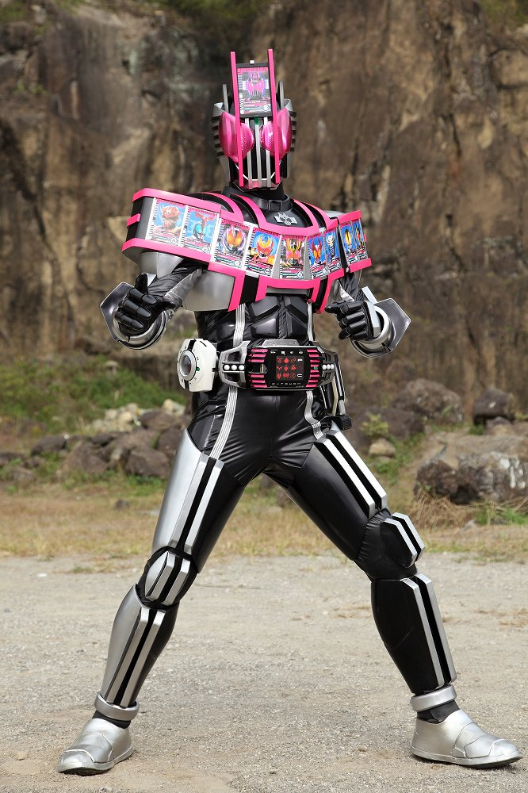
ディケイド最強コンプリートフォーム
変身アイテム「ケータッチ」を使用し、変身
コンプリートフォームを超える最強のディケイド
仲間のライダーを最強形態に変化させることができる。
過剰戦力になりがち。
仮面ライダー一覧